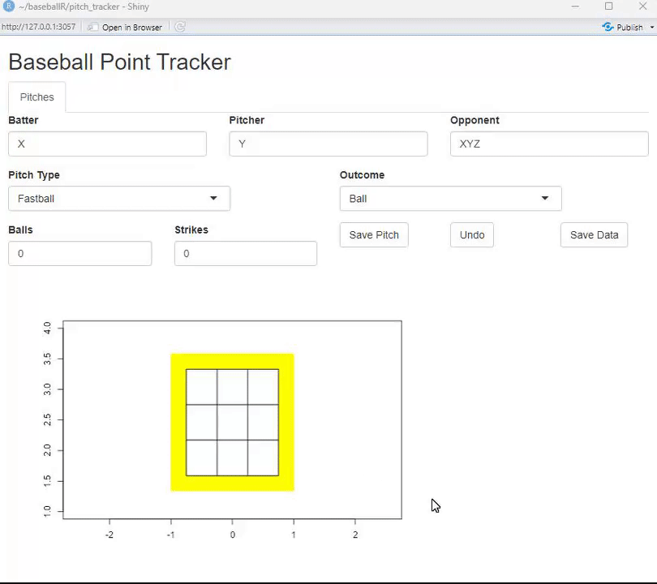
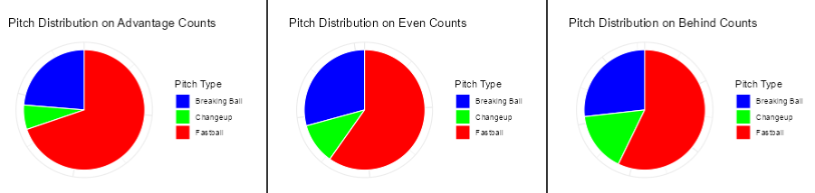

Tracking Pitch Data in Real Time
After a couple months of work and learning, I’ve built my first shiny app and truly delved into the realm of data science.
Origin
In my previous blog post, I talked about a recap of my 2023, and looking forward to the current year of 2024. In that blog, I mentioned that I wanted to learn R for its specialized data science capabilities, and I feel as if I have a firm grasp on it now. After watching plenty of tutorials, reading through documentation, and especially looking through Mr. Robert Frey’s work, I’ve created a shiny app for my college baseball team to use.
As a D3 baseball team, we do not have access to Trackman or Rapsodo data. This began my journey into pitch tracking, as well as analyzing and visualizing the data. At first, I started with a full pitch tracking system, where a user would be asked to input all sorts of data you would automatically get retrieved from a trackman. They would eyeball the location of the pitch, click on a graph, as well as input a bunch of other variables, such as the batter and pitcher names, the count, the outcome of the pitch, and so on. Eventually, I concluded that this road was too much tedious work for a minimal amount of data in return that we could use.

Moving along, I sat down and had a meeting with one of my coaches and discussed some things about what we could create and how it would benefit us as a team. We decided that producing some sort of pitch distribution system that would automate and produce more specific feedback than something similar to a hot / soft chart would be most beneficial.
Hot / Soft
For those who are not the most baseball oriented, you can classify every type of pitch thrown into two categories: “Hot” or “Soft”. A “hot” pitch is any sort of fastball, whether it be a 4-seam, 2-seam, or even cutters and sinkers. A “soft” pitch indicates all other pitches, as they are also known as “off-speed”. These include curveballs, changeups, sliders, splitters, or anything else not called a fastball. When you get to the college level and above, almost every team is tracking and charting this data in real time, although usually by paper and pencil, from what I have gathered.
What does a Hot / Soft chart do? Essentially, you are creating a simple tally for every pitch thrown in a unique count. As a game goes on, you can figure out pitcher tendencies, and use that to your advantage. For example, figure that you are about to go up to bat later on in the game, and you take a quick glance at the hot soft chart. You notice that if the count is 2-1, the pitcher has thrown 15 (hot) fastballs and only 1 (soft) off-speed pitches. You make a note of that in your head. Now you get up to bat: Ball 1. Foul ball. Ball 2. You take a step out and think, “This guy is pretty much only throwing fastballs in 2-1 counts. If he throws me a fastball in the strike zone right here, I’m going to crush it”. The pitcher throws a fastball, and you smoke it for a double. As a hitter, using something as simple as a hot / soft tendency chart allows you to gameplan your at-bat and have some sort of advantage over the pitcher. The best hitters in the world fail 7/10 times, so hitters need every advantage they can get. Something as simple as noting a specific count where a pitcher has fallen into a consistent tendency can completely change the at-bat. In converse, this can also be used to help pitchers as well. Rather than track this data for hitters, you can track this data defensively for your pitchers and point out tendencies that your own guys are getting into, and keep them from falling into these habits to keep the hitters on their toes, and allow your team the best advantage possible.
Visualizations
In the app, data is visualized in both pie chart and bar graph form. A majority of the data is shown via pie charts, so I’ll talk about that first. I’ll split it into 3 sections: Overall, Types, and Specific.
Overall. From the beginning of the game, every pitch is tracked into an “Overall Pitch Distribution” chart, which is basically a fancy way of saying a pie chart of every pitch. Nothing is filtered out here, it is not count specific, batter specific, or based on the handedness of the batter or pitcher. This chart simply tracks every pitch, and shows you how often your opponent is throwing what type of pitch.
Types. Here is where things get a little tricky. Every single pitch changes the predicted outcome of an at-bat. In MLB just last year (2023), 1-0 vs 0-1 was worth 30 points of batting average, or over 100 points of OPS if you prefer (Baseball Reference). If you crunch enough of these numbers to have them regress to a mean, you can develop different types of counts. The 3 types are advantage, disadvantage, and even counts, from a hitter’s perspective.
- Advantage: the current count gives the batter an advantage
- Includes 1-0, 2-0, 2-1, 3-0, 3-1
- Disadvantage: the current count has the batter at a disadvantage
- Includes 0-1, 0-2, 1-2, 2-2
- Even: the current count has negligible advantage for either batter or pitcher
- Includes 0-0, 1-1, 3-2

This is probably the most advantageous part of the app. Having an idea of what type of pitch is coming on a certain type of count is more than beneficial. As mentioned, pitchers tend to fall into habits not only on specific counts, but in certain types of counts as well. If they get to a disadvantage, they usually rely on their best pitches to get them back into the fight, at least for that at-bat. All of this data can be tracked, and used to an offense’s advantage based on the pitcher they are facing.
Specific. This is the most in-depth part of the app. This tab will show you the pitch distribution for every individual count the hitters have seen. This can be especially important to have knowledge on when you are in an “impact” count, or a count where something major is likely to happen, such as 3-2.
Filtering
Additionally, the app allows for a filtering tab that will do all of the data above, but filter out results that you don’t. This is perfect if you are looking for pitches only thrown to a specific hitter, or if there is a change of pitchers and how they pitch differently.

Conclusion
Stuff like this is super cool to me. Not only is it baseball, the sport that I love, but breaking down something as simple as what type of pitch was thrown into data and analyzing it to get an advantage is a perfect combination for what I enjoy doing. There is plenty more to this app that I have not mentioned in this blog, so feel free to check it out here!